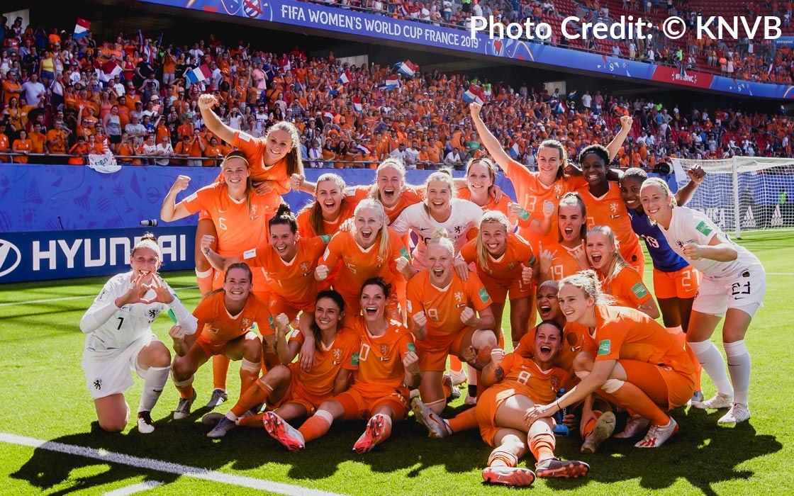
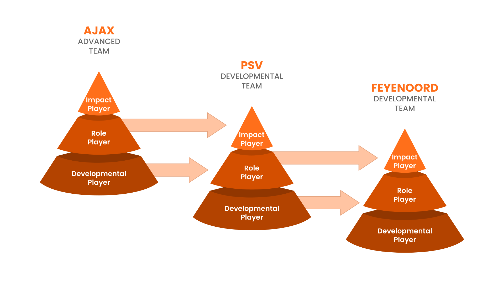
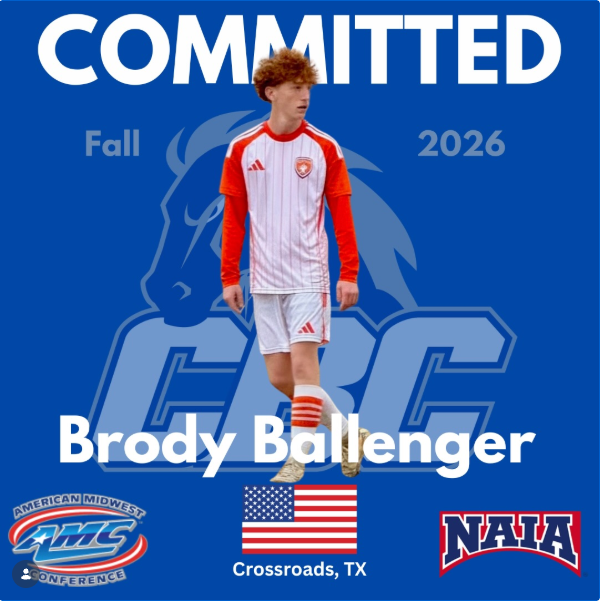
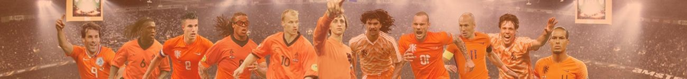
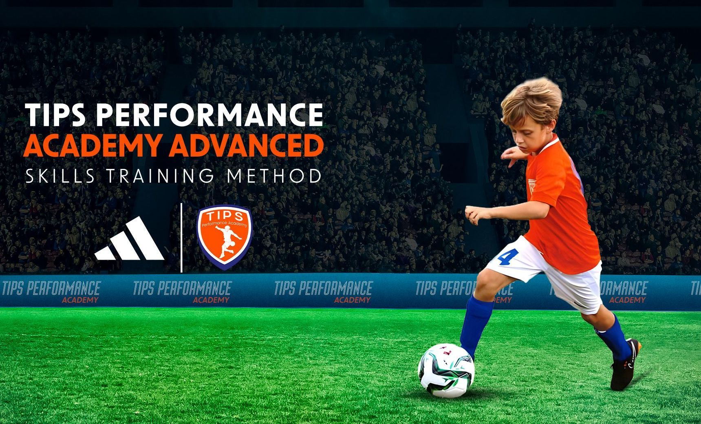
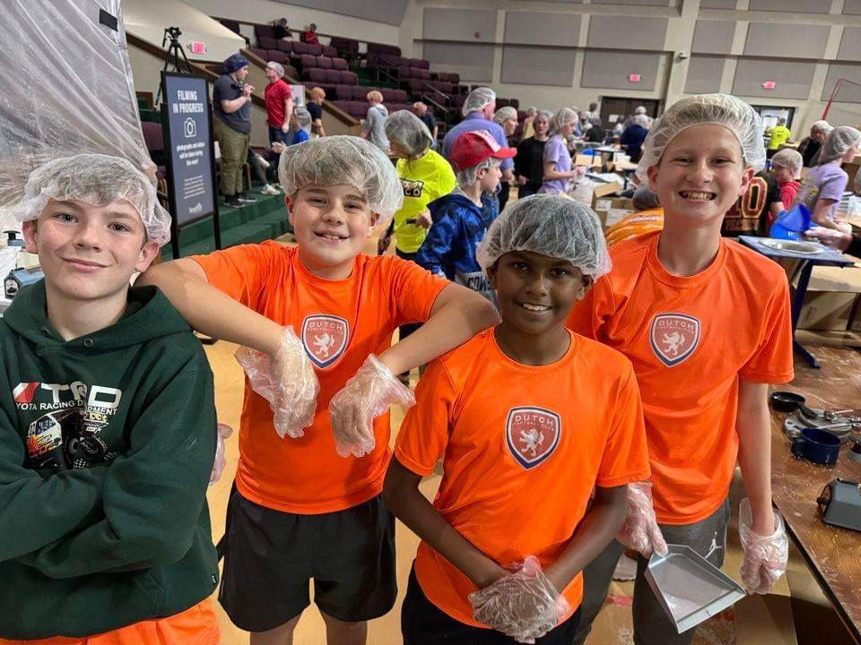

Fields of Faith · Frisco, TX




"It's not the size of the dog in the fight but the size of the fight in the dog"… that rings so true for the tiny geographic country of The Netherlands, aka Holland. However, when it comes to the world game of football, the Dutch are titans.
The Dutch changed the trajectory of World Football when they introduced the revolutionary "Total Football" style of play in the '70s which fostered a culture, methodology, and philosophy that future generations still benefit from today. Fitting into Texas 16 times over and equaling the same number of participants in the game just in Texas alone, The Netherlands youth club system (Ajax, Feyenoord & PSV and many more), continue to produce a healthy consistent crop of intelligent and skillful players that dominate the top leagues throughout Europe.
The exceptional talent produced in Holland is displayed on its national team famously wearing the Orange Colors. By adopting and implementing the successful footballing methodology and philosophy of the Dutch, The Dutch Football Club is proud to bring this unique footballing culture to soccer enthusiasts in the North Dallas area.
For those wanting to take their game to the next level, Dutch Lions deliver a soccer experience that inspires a lifelong PASSION for the game, DEVELOPs an attacking-possessive style of play, and prepares players to COMPETE at the highest levels — helping each athlete reach their full footballing potential.
Club Philosophy Details →Dutch FC Select & Academy teams compete at various leagues. We have advanced, intermediate and developmental level teams in each age group.
Dutch soccer philosophy in a fun learning environment heavily focused on development.
Advanced skills training that boosts your baseline fundamentals.
Improve your Goalkeeper Fundamentals with GKer coach Trey Nickel, and strengthen the foundation to grow into a stronger keeper.
FELLOWSHIP of CHRISTIAN ATHLETES (FCA) events, fundraising, and volunteering at The Big Pack in Frisco for Feed My Starving Children.
The Dutch FC 1st Team participates in the United Premier Soccer League (UPSL) — the 4th tier of the US Soccer pyramid, just below the three professional tiers.
Average age 22.5 years. Over 400 teams nationwide compete for 32 places in the National Playoff Bracket.

Not every college player starts where you'd expect.
Read Story →
There's a belief in North Texas youth soccer — and across much of the U.S. — that you have to choose: play beautiful, intelligent football or win games. Development or results. Pick one. At Dutch FC, we reject that choice entirely.
Read Article →
There is no right or wrong way to any journey, only trade offs.
Read →
FOR IMMEDIATE RELEASE
Read →
Playing time in youth soccer can be a challenging balancing act for coaches and confusing for players and parents. What's fair and just? Well, the real answer is, "It depends."
Read →The Squad System — A better way to Enjoy, Develop & Compete.
Read →The Dutch Pride of Lionesses is on the prowl to dominate Women's World Football. Ranking third in FIFA Women's World behind the USA and Germany, ahead of France, England, Brazil, and Japan.
Read →
The Dutch have earned a deserved reputation for their technical creativity, tactical awareness, attacking possessive style, and ability to find their team mates. These qualities are the result of a guiding philosophy and methodology instilled in players starting at the grass roots level.
Read →Tryouts run May 11th – June 12th. No cost. Bring your boots — we'll take it from there.
View Tryout Details →